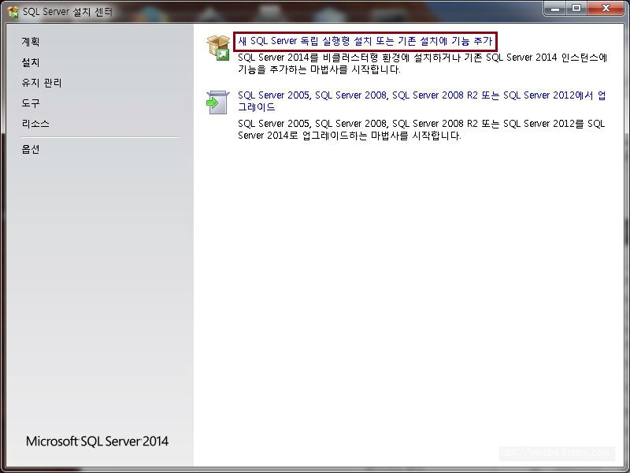
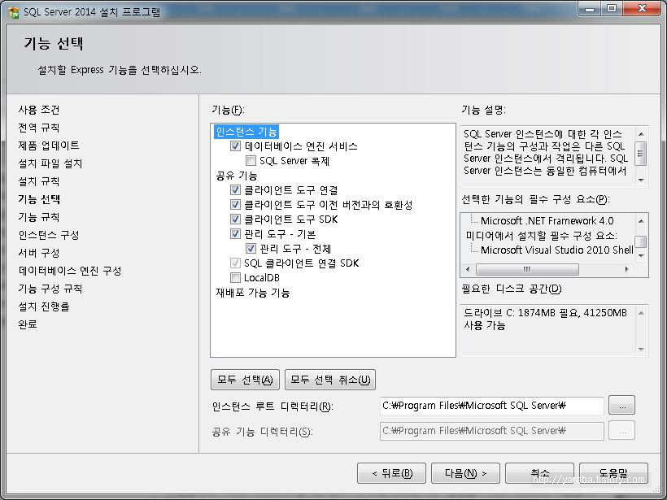
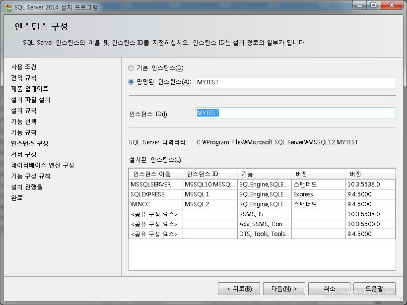
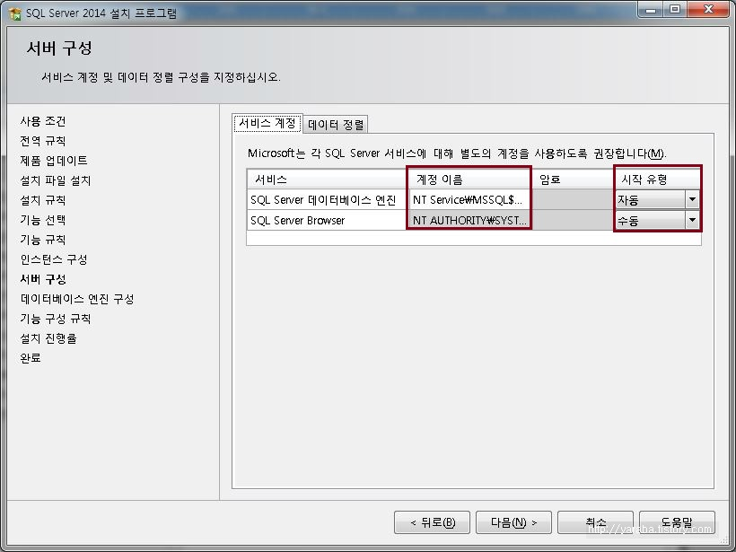
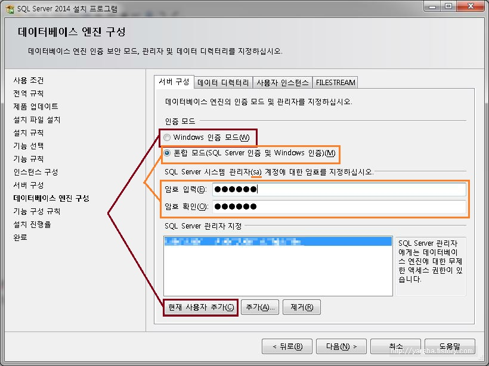
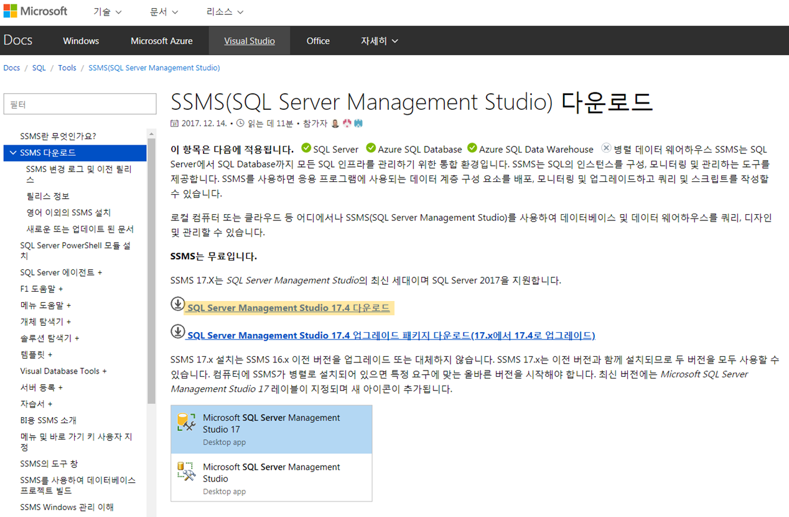

SQL Server 운영
Check Point
-
SQL Server 2017 Express 설치 (링크)
-
SQL Server Management Studio 17.9 설치 (링크)
신규 설치
-
새 SQL Server 설치

-
기능 선택

-
인스턴스 구성

-
서버 구성 -> 서비스 계정

-
서버 구성 -> 인증 모드

-
SSMS (SQL Server Management Studio) 설치

Let's Prcactice
-
2번 항목에서 기존 인스턴스에 새로운 인스턴스를 추가해 봅시다.
-
3번 항목에서 인스턴스 구성 시 명명된 인스턴스로 선택하여 설치해 봅시다.
-
5번 항목에서 혼합 모드 선택하여 설치해 봅시다.
-
설치된 SSMS 를 이용하여 다른 사람의 SQL Server 로 접속해 봅시다.
접속이 되는 PC도 있고, 안되는 PC 도 있다. 이유가 무엇일까?
처음으로
이전
다음